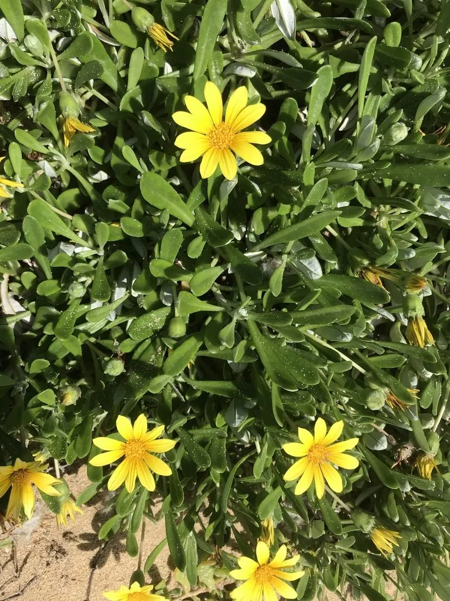

花卉与草本 · 植物界
勋章菊 Gazania rigens

菊科多年生草本，舌状花基部有深色斑纹，形似勋章，花大色艳、日开夜合，是耐旱的花坛与地被植物，原产南非。
- 分类
- 门被子植物门纲木兰纲目菊目科菊科属勋章菊属
- 栖息环境
- 南非的海岸沙地与草原，喜光、耐旱、怕积水
- 地理分布
- 原产南非，现世界各地广泛栽培，中国各地花坛常见
- 保护级别
- 暂无评估
物种志
勋章菊为菊科勋章菊属多年生草本，常作一年生栽培，株高 20–30 厘米，茎匍匐或斜生，叶片披针形，羽状深裂，叶背密被白色绒毛。头状花序单生，直径 6–10 厘米，舌状花橙黄、金黄或白色，基部有深色环纹，形似勋章，花期 4–10 月；果实为瘦果。
勋章菊原产南非的海岸沙地与草原，喜阳光充足、温暖干燥和排水良好的环境，耐旱力强，怕积水和阴湿。它的花序在白天光照充足时开放，傍晚和阴天闭合，是典型的“日出而作”的菊科花卉。勋章菊花大色艳、花期长，适合布置花坛、花境和岩石园，也可作地被和盆栽，在温暖地区能全年开花，是南方冬季花坛的常见选择。
形态与习性
- 株高20–30 厘米，茎匍匐或斜生
- 花期4–10 月，温暖地区全年开花
- 果期花后结瘦果
- 光照极喜光，光照不足花朵闭合
- 水分耐旱，忌积水
- 土壤疏松、排水良好的沙质土
- 繁殖以播种和扦插为主
- 主要用途花坛、花境、岩石园、地被
趣味知识
- 勋章菊的舌状花基部有深色环纹，形似勋章，因此得名。
- 它的花白天开放、傍晚和阴天闭合，是典型的日开夜合花卉。
- 勋章菊原产南非海岸，叶片背面密生白色绒毛，可减少水分蒸发。
- 它耐旱耐贫瘠，是花坛和岩石园中管理粗放的好材料。